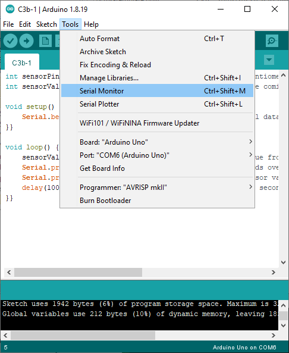
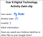
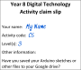

C5 — Analogue inputs
There are three levels in this activity:
It would be best if you do activity “E4 - Wiring an LDR” before doing this activity.
 Level 1 — Numbers from an analogue input
Level 1 — Numbers from an analogue input
Complete the challenge
int sensorPin = A5; // the pin we'll connect an analogue sensor to
int sensorValue = 0; // variable to store the value coming from the sensor
void setup() {
Serial.begin(9600); // Set up serial data communication
}
void loop() {
sensorValue = analogRead(sensorPin); // read the value from the sensor
Serial.print("The sensor value is: "); // send the words over the serial data connection
Serial.println(sensorValue); // send the sensor value over the serial data connection
delay(100); // wait for 0.1 seconds so that it doesn't update too often
}


Claim your achievement

Level 2 — Controlling the LED with an analogue input
Complete the challenge
void setup() {
pinMode(13, OUTPUT); // set up pin 13 as an output.
}
void loop() {
digitalWrite(13, HIGH); // turn the LED on
delay(1000); // wait for 1 second
digitalWrite(13, LOW); // turn the LED off
delay(1000); // wait for 1 second
}
The number in the brackets in the delay() function tells the Arduino how long to delay. But it doesn’t have to be a number – you can put a variable there too.
Change each delay(1000); to be delay(sensorValue);.
Claim your achievenent

Level 3 — Turn the LED on and off with the LDR
Complete the challenge
int sensorPin = A5; // the pin we'll connect an analogue sensor to
int sensorValue = 0; // variable to store the value coming from the sensor
int ledPin = 13; // the pin with the LED attached
void setup() {
pinMode(ledPin, OUTPUT); // set up pin "ledPin" as an output
}
void loop() {
sensorValue = analogRead(sensorPin); // read the value from the sensor
}
Put the code inside the loop() function.
Change the value you’re comparing to so that the LDR is able to reach that number.
Claim your achievement
